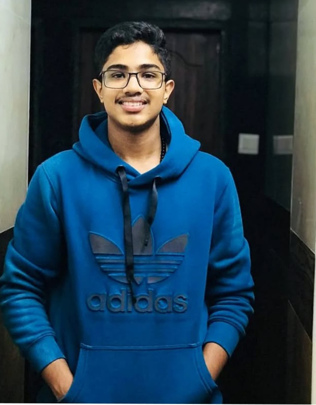

Board of Directors
Leadership that empowers and connects — our TARRL board members.

Ms. Neil Bruce (VU3EFZ)
Managing Trustee & Legal Advisor

Mr H Gopalakrishna Prabhu (VU3XUW)
Treasurer & Trustee, TARRL

VAIBHAV V K NAIK (VU3ZNL)
President, TARRL

Jeevan Mathew
Interim Secretary, TARRL

Mr Parth Darade (VU3ZNE)
Board Member & E&TW Assistant